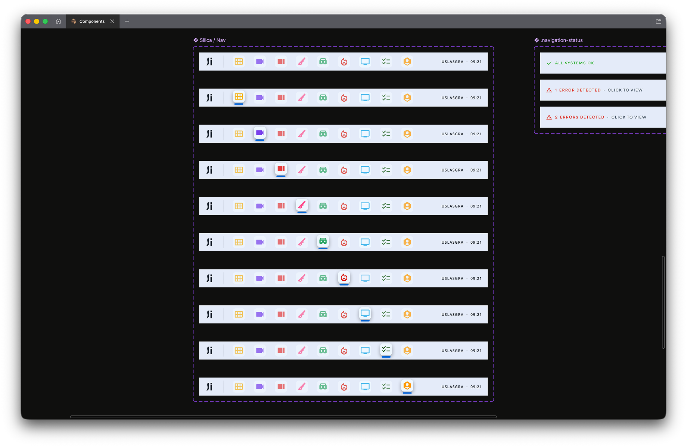
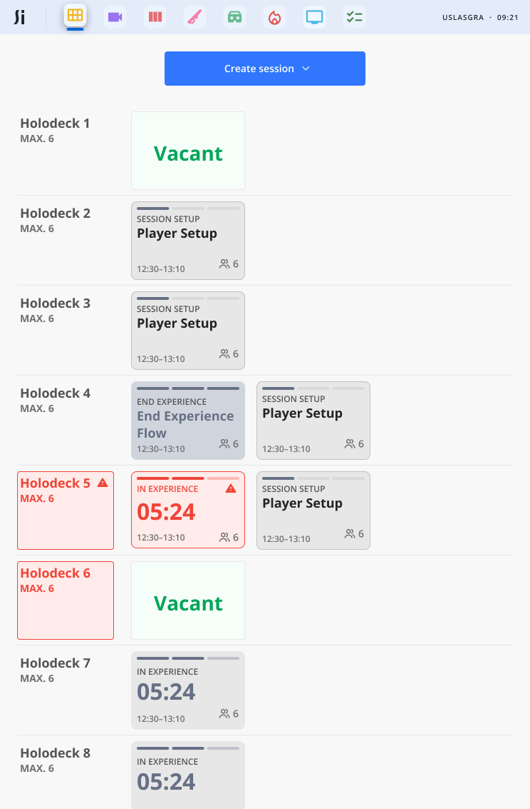
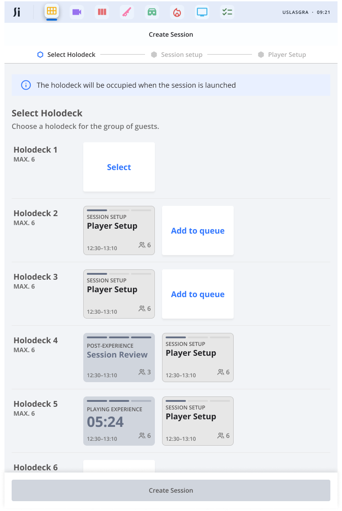
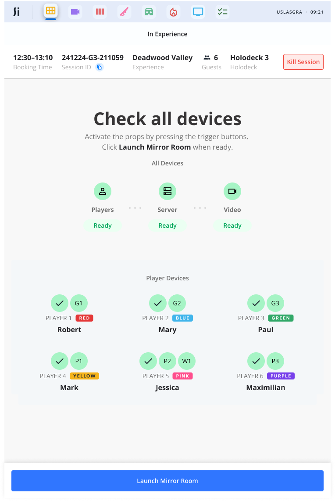
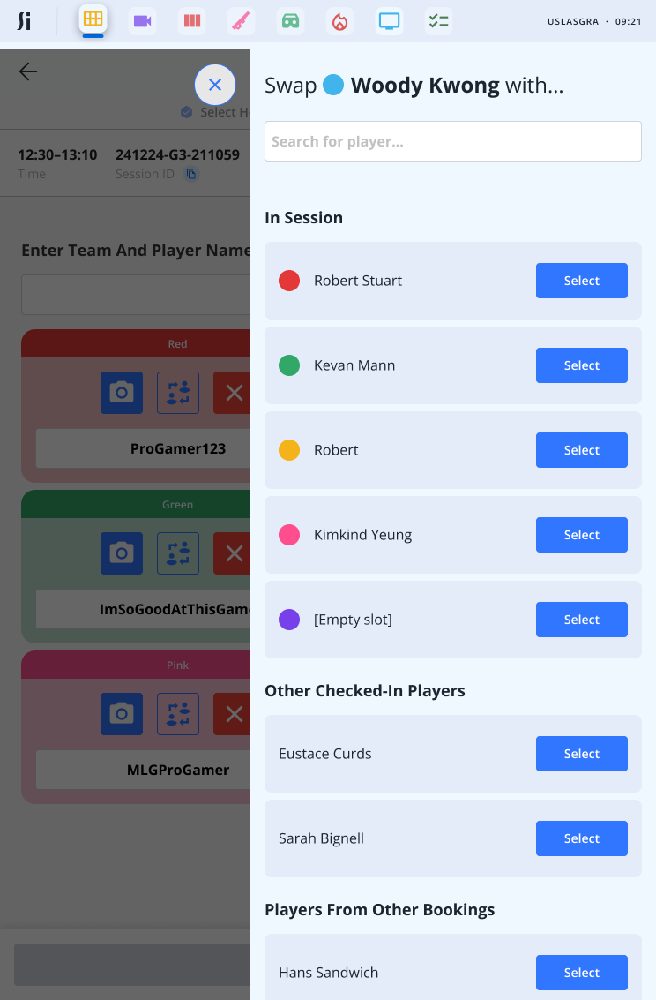
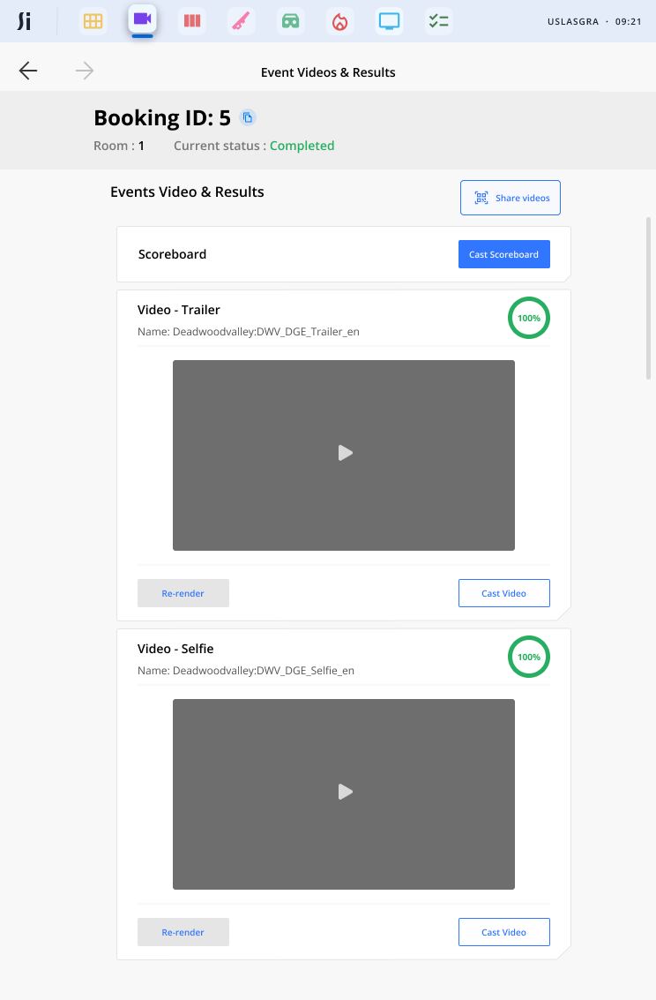

The OS that runs Sandbox VR.
Silica is the modular staff-facing platform that now runs every Sandbox VR store in the world.
Before Silica
Before Silica, staff ran sessions on something called Sandbox OS. It was janky, crash-prone, and constantly made people jump between third-party apps just to handle one booking. Things fell through the cracks. The quality of a guest's experience depended too much on who happened to be working that day.
I was handed a contractor's rough first stab at a replacement. There was no heirarchy, no design system, everything was loosely held together. My job was to turn it into something launchable without blowing up the dev progress that already existed.
San Francisco, first principles
I flew out to San Francisco early in the project with my boss and the Head of Product to figure out the right approach. Over the course of a few days we brainstormed and pretty quickly agreed that we didn't want to build a monolithic super-app. One giant thing that does everything is hard to update, hard to maintain, and when something breaks it tended to break everything.
Instead we went modular. A suite of micro-apps — siloed, independently updatable, each doing one thing well. That decision ended up shaping everything that followed.
My boss left early into the project. From that point it was me and Woody Kwong, an excellent PM, running point on the whole thing.
The navigation layer

Nav component sheet — all app icon states and the three system status variants
Staff at Sandbox VR use iPad minis to manage sessions. The nav bar sat at the top — app icons for each micro-app, always visible, always one tap away. Switch between apps without losing your place in whatever you were doing.
The nav also showed system status. All clear, one issue, multiple issues. It's always there, never intrusive. You only really notice it when something's wrong — which is exactly the point.
Staff sitting and staring at the status screens was identified as a key issue for store operations teams – many weren't familiar with what "Headset Latency" or the multitude of different stats meant, yet would be terrified seeing a graph spike or something turn orange or red for half a second. Our goal was to take them off these pages and only let them know when there really was an issue.
The main focus


The session app is the main focus of Silica. It gave staff a live overview of the whole store — every Holodeck, every session, what's running, what's vacant, what's flagged, what's broken and what's not
From there it walks them through every step:
- Assign guests to a Holodeck
- Confirm the experience, difficulty, any specific settings (Vertigo mode for Squid Game, or Hardcore for the Deadwood games, for example)
- Confirm player names, take guest photos for their personalised trailers
- Loadout selection — guests pick weapons or characters where the experience supports it
- Check all hardware before anyone steps into the Holodeck

Device check — every piece of hardware confirmed in one view before launch
The device check screen is a key screen during check-in. Every piece of hardware confirmed in one view — Players, Server, Video — with individual player devices shown by name and team colour underneath. Easily able to monitor, check for when it's ready and then go.

Player swap — searchable, sortable, handles mid-flow edge cases
Edge cases matter too. Need to swap a player mid-flow if they're not feeling it anymore, or want to move around a big group with multiple rooms? The system shows you who's in session, who else is checked in, and players from other bookings — all searchable, sortable in a couple of taps.
Designing for someone who doesn't care about the tech
This was one of the more interesting design problems on the project. Silica needs to flag hardware issues — disconnected props, lag spikes, network problems — to staff who aren't technical, nor care to be. These aren't necessarily people who took the job because they love troubleshooting.
Traffic lights. Green is fine. Amber, keep an eye on it. Red needs dealing with.
If it needs escalating beyond that, a deep link drops the full error detail straight to a Slack channel where the T1 support team can pick it up. The member of staff doesn't need to know what's wrong, they just need to be able to pass it to someone who can help.
The post-experience moment

Video app — trailers, highlights, cast and share, all handled in-venue
Once the session wraps, guests head to the post-experience area. Session app then kicks them over to the video app takes over.
Staff then cast the personalised trailers and highlight reels to the TV, then share them — airdrop, email, text, QR code. If a render's failed, they can restart it on the spot without needing anyone technical in the room. Relevant upselling gets surfaced here too, at the right moment rather than shoved in somewhere awkward.
Where it is now
We launched with two apps. Since then it's grown into a full software fleet — prop management, check-in, booking management, fire alarms, and more. All on the same modular foundation.
Third-party integrations are gone. Updates roll out across the whole estate without touching unrelated parts of the system. What started as a contractor's rough first pass is now the thing that runs every Sandbox VR store in the world.